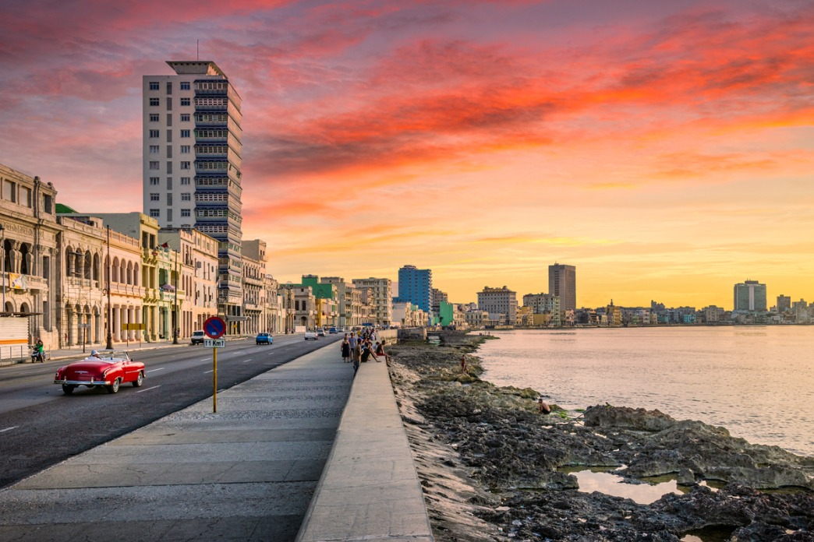
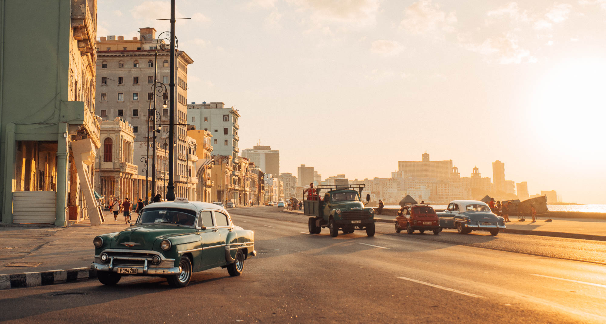
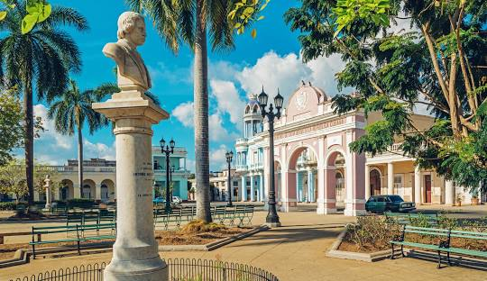
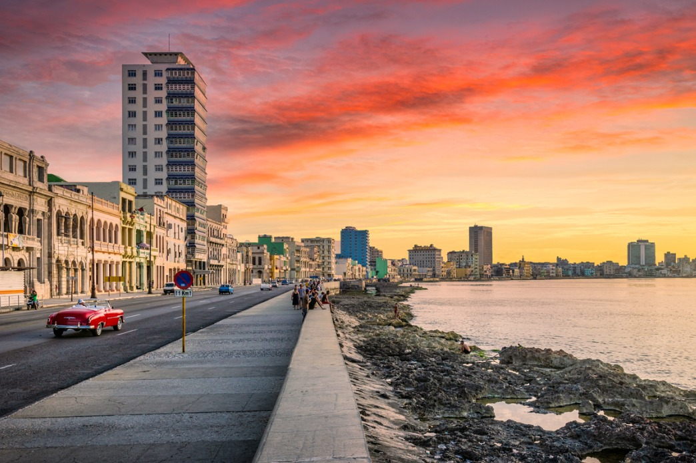
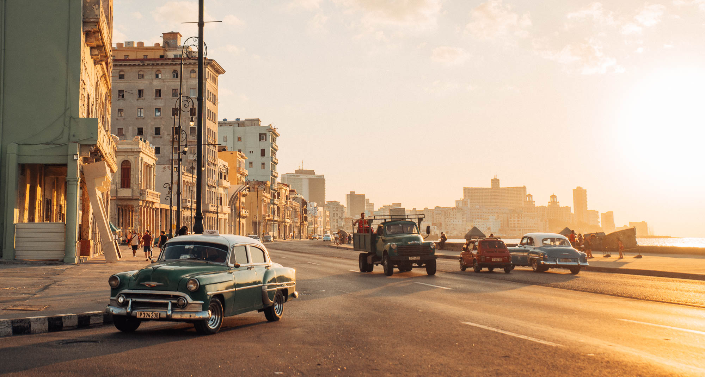
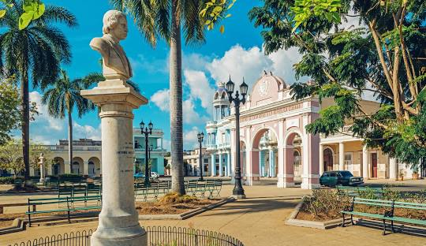

Patrimônio Histórico
Desprovidas da interferência moderna, as cidades coloniais de Cuba não mudaram muito desde que piratas armados com mosquetes perambulavam os Caribes. No Museu da Revolução, em Habana Vieja, é possível acompanhar a história da queda de Fulgêncio Batista, incluindo o icônico iate Granma, que trouxe os rebeldes liderados por Fidel Castro do México. A Praça da Revolução, famosa pelos discursos de Fidel, é um ponto turístico popular, assim como o Memorial José Martí, que oferece uma vista panorâmica da cidade. Ernest Hemingway, que viveu duas décadas em Cuba, popularizou lugares como La Bodeguita e El Floridita. O hotel Ambos Mundos, onde Hemingway morou, é uma opção de hospedagem clássica. O centro histórico de Havana é uma parada obrigatória, mas as maiores atrações de Cuba são suas praias, como Varadero, Cayo Largo e Cayo Coco, famosas por suas águas mornas e areia branca.


 




